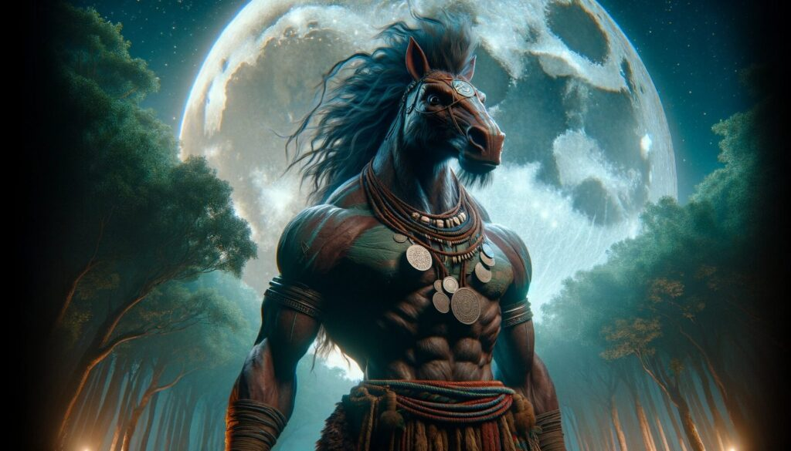

Types of Mythological Beings
Deities and Gods
The Philippine pantheon is rich with gods and goddesses, each embodying different aspects of life, nature, and the cosmos. From Bathala, the supreme god, to Mayari, the moon goddess, these deities are revered for their power and wisdom.
Nature Spirits and Elementals
Nature spirits, known as Diwata or Anito, are believed to inhabit the natural world, from forests to rivers. These spirits can be benevolent or malevolent, and they play a crucial role in maintaining the balance of nature. Examples include the fair Diwata and the vengeful Tiyanak.
Mythical Creatures
The Philippines is home to a fascinating array of mythical creatures. These beings often reflect the culture’s deepest fears and hopes. Some are monstrous like the Aswang and Kapre, while others like the Tikbalang and the Sirena captivate with their mysterious allure.
Supernatural Beings
Supernatural beings in Philippine folklore possess extraordinary powers. These include the Manananggal, a vampire-like creature, and the White Lady, a ghostly apparition often seen haunting roads and old buildings. These beings are often subjects of local legends and ghost stories.
Heroes and Demigods
Philippine mythology also celebrates heroes and demigods who possess remarkable abilities and perform incredible feats. Heroes like Lam-Ang, who could speak immediately after birth and go on epic adventures, highlight the valor and ingenuity revered in Filipino culture.
Folkloric Characters
These characters are pivotal in many stories and legends, often teaching moral lessons or explaining natural phenomena. Folktale characters like Maria Makiling, the guardian spirit of Mount Makiling, and the mischievous Duwende, tiny beings who inhabit anthills, are well-loved in Filipino folklore.